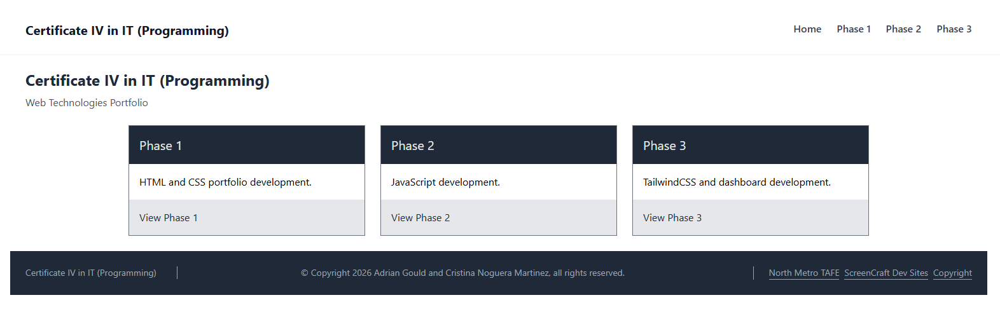

MyPet App

MyPet is a mobile application designed to manage pets profiles, health information, veterinary records and daily care.
Technologies Used:
- C#
- .NET MAUI
- XAML
- API
MyPet is a mobile application designed to manage pets profiles, health information, veterinary records and daily care.

A Python-based word guessing game where players try to discover a hidden word using clues and feedback.

A responsive web project built with HTML and Tailwind CSS, featuring a clean layout and organised interface.